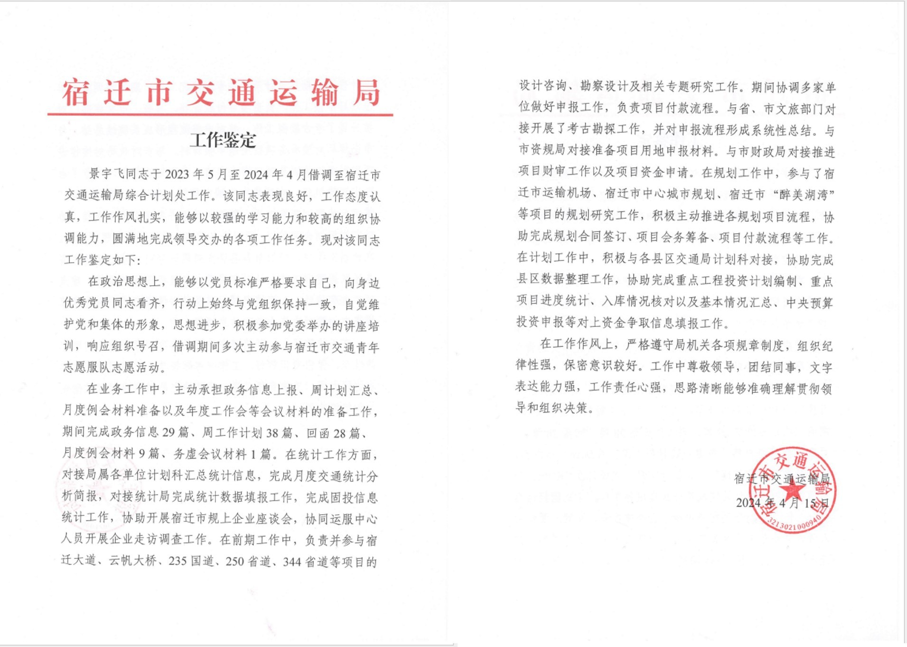
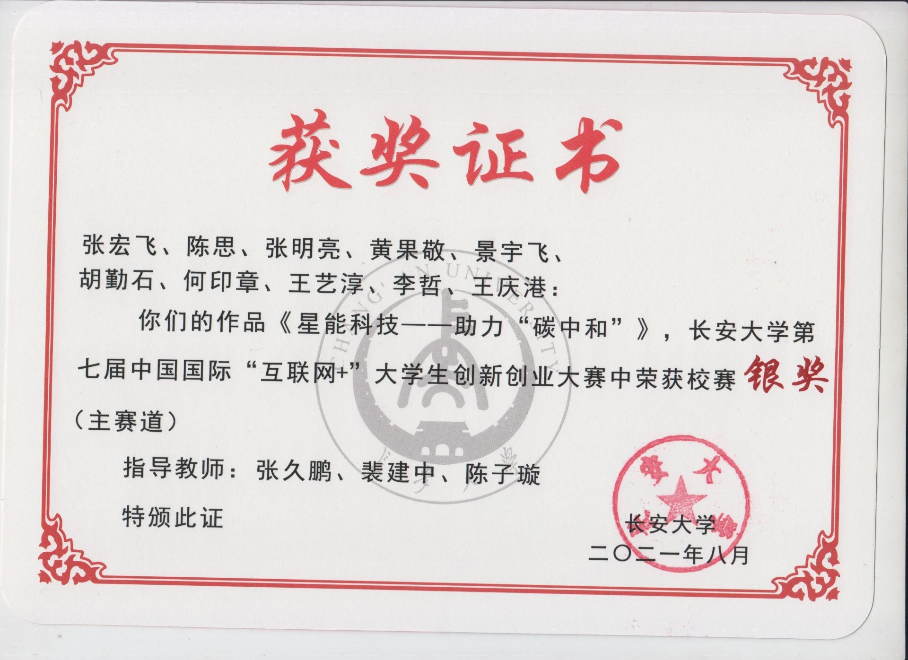
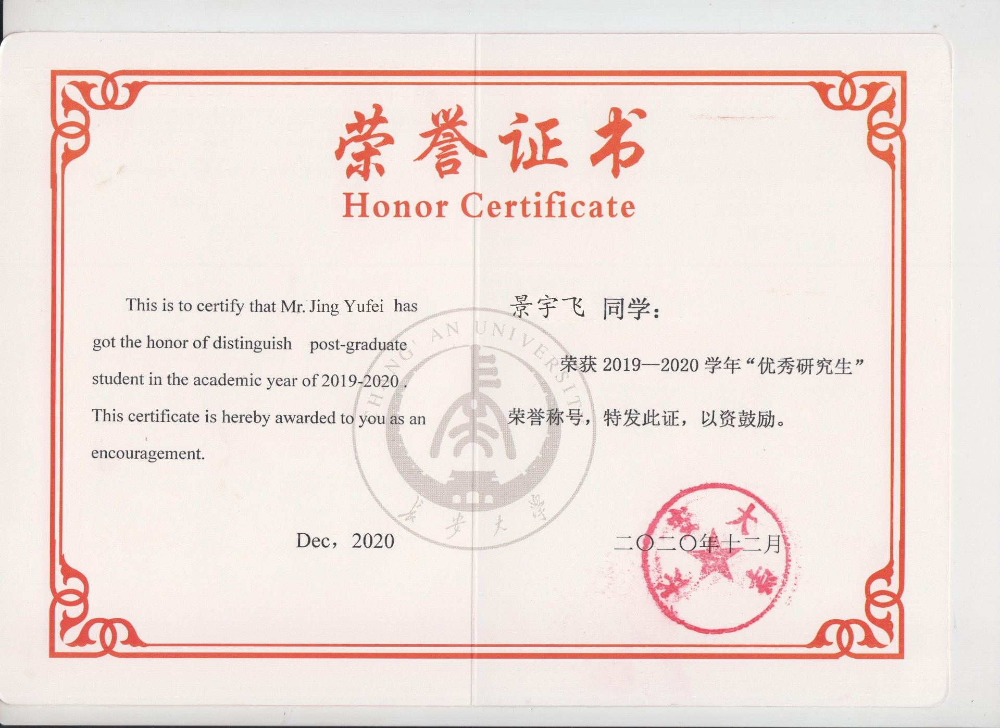
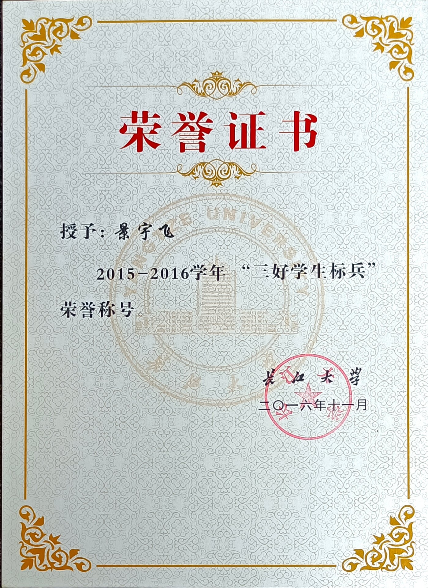
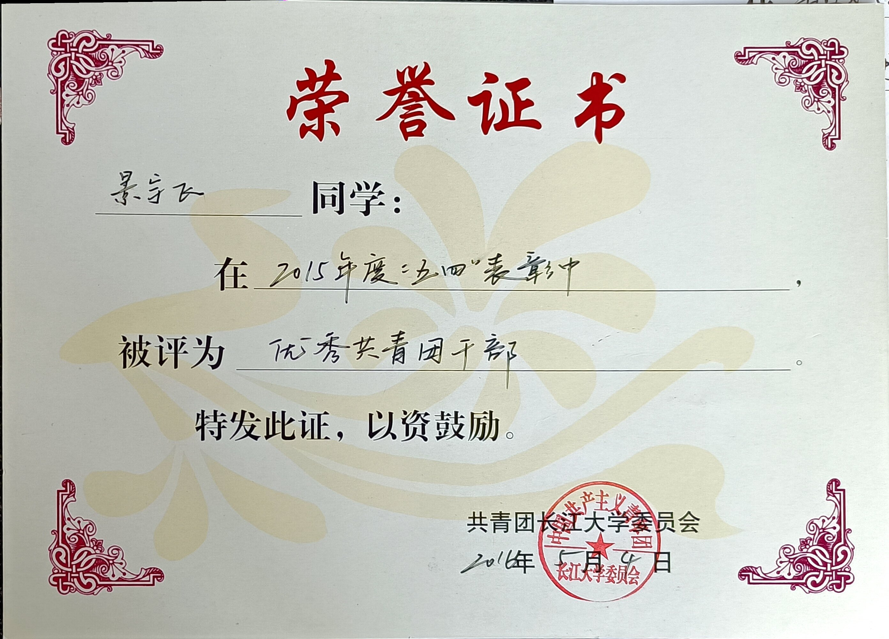

获奖情况
2014.09 长江大学一工部学习委员聘书 · 2015.05 优秀共青团员 · 2015.10 长江大学奖学金 · 2015.10 三好学生 · 2015.12 普通话二甲 · 2016.05 优秀共青团干部 · 2016.09 计算机二级（MS Office） · 2016.11 三好学生标兵 · 2016.11 国家奖学金 · 2017.05 优秀共青团员 · 2017.10 长江大学奖学金 · 2017.10 三好学生 · 2018.06 优秀毕业生 · 2018.09 优秀毕业设计 · 2019.10 长安大学二等学业奖学金 · 2020.05 创青春大赛银奖 · 2020.10 互联网 + 铜奖 · 2020.10 一等学业奖学金 · 2020.10 注册道路工程师基础考试合格 · 2021.10 互联网 + 银奖 · 2021.10 一等学业奖学金 · 2021.10 优秀研究生

宿迁市交通运输局工作鉴定（2023—2024 借调）

长安大学“互联网+”校赛银奖《星能科技》

长安大学优秀研究生（2019—2020 学年）

三好学生标兵（2015—2016 学年）

优秀共青团干部（2015 年度）
← 横向拖拽滑动查看更多证书 →